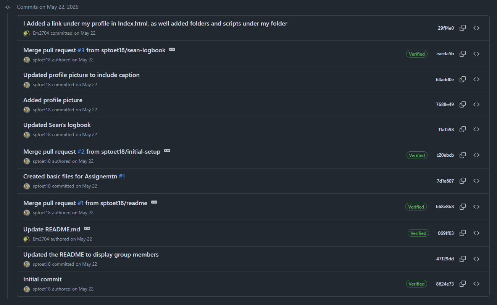
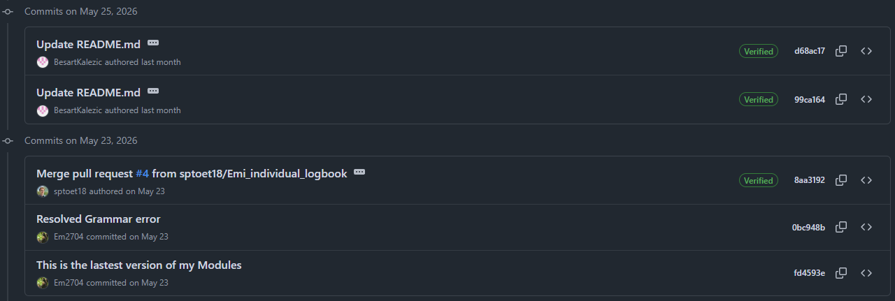
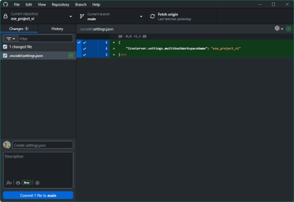

Created Github Repository
We created a GitHub repo. You can find it here.
This repo will contain all the worked that we do for the website. You may also see some code the Raspberry Pi and the STM32 here.


We created a GitHub repo. You can find it here.
This repo will contain all the worked that we do for the website. You may also see some code the Raspberry Pi and the STM32 here.


Using GitHub Desktop I was able to pull and make branches on the repo.
